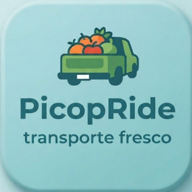

🚜
Falta de transporte para pequeños productores
Muchos agricultores no cuentan con un vehículo propio ni con acceso fácil a transporte para trasladar sus cosechas a tiempo.

PicopRidetransporte frescoConectamos a pequeños agricultores con transportistas disponibles para llevar sus productos frescos a mercados, tiendas y compradores.
Hecho para pequeños productores
Más conexión. Menos cosecha perdida.
Muchos agricultores no cuentan con un vehículo propio ni con acceso fácil a transporte para trasladar sus cosechas a tiempo.
Buscar quién transporte la cosecha puede retrasar la entrega y la venta.
Sin traslado oportuno, los alimentos frescos pueden deteriorarse antes de llegar al comprador.
Las opciones limitadas pueden elevar el costo del transporte y reducir las ganancias.
PicopRide es una plataforma que conecta a agricultores que necesitan transportar sus productos con conductores que tienen espacio disponible en sus vehículos.
Una experiencia sencilla para productores y transportistas.
Agrega dónde recoger la cosecha, a dónde va y qué cantidad necesitas mover.
Revisa la solicitud y coordina con un conductor disponible para tu ruta.
Organiza el traslado y lleva tus productos a su siguiente destino.
Completa los datos y crea una solicitud de demostración. En esta versión, quedará guardada en este navegador para que puedas probar el flujo.
Aún no hay solicitudes. Completa el formulario para probar la aplicación.